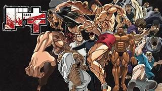

Baki

"Baki" es una serie de anime y manga que sigue la historia de Baki Hanma, un joven luchador que busca mejorar sus habilidades en artes marciales. La trama se centra en Baki enfrentándose a los luchadores más fuertes del mundo, incluyendo a su propio padre, el legendario Yujiro Hanma. A medida que Baki se enfrenta a desafíos cada vez más intensos, la serie explora temas de fuerza, superación personal y rivalidad en el mundo de las artes marciales.
La Casa de Papel
"La Casa de Papel" es una serie de televisión española que sigue a un grupo de criminales liderados por un personaje conocido como "El Profesor". Su plan es llevar a cabo el atraco perfecto a la Fábrica Nacional de Moneda y Timbre de España, donde planean imprimir billones de euros y escapar sin ser capturados. A lo largo de la serie, se desarrollan complejas relaciones entre los miembros del equipo y surgen giros inesperados en la trama. La serie combina elementos de thriller, acción y drama, explorando temas de lealtad, amor y resistencia.